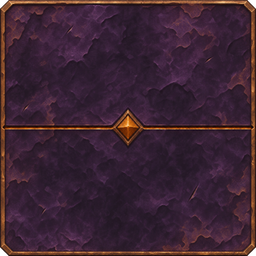
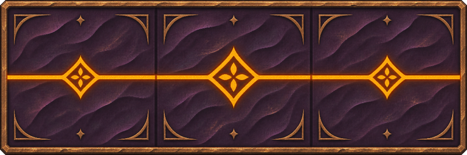
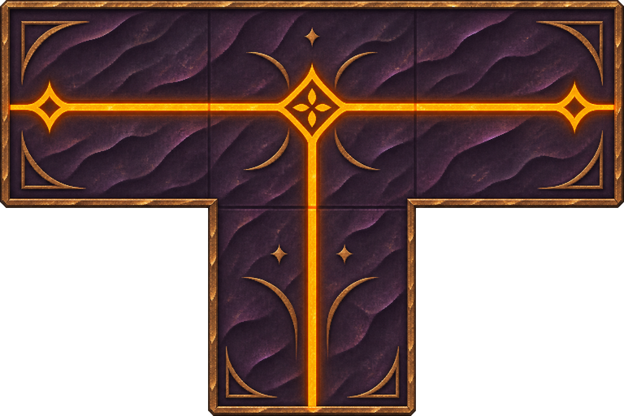

生命金属 · 第二批资产
暗紫金属 / 氧化痕 / 旧铜包边与琥珀刻线 · 4 枚定尺纹章 + 1 张平铺底材
生命金属底材 · 2 × 2 平铺预览
单张 1024 × 1024
只含材质；无板面轮廓、刻纹与外发光。
上下、左右相对边像素差 = 0。
纹章统一 256px / 格，不留透明外边距。

铆纹
1 格 · 256 × 256

长直
3 格 · 768 × 256

三通
4 格 · 768 × 512
四通
5 格 · 768 × 768
已校验：整数格比 · 四边实心贴边 · 占格中心 · 开口偏差≤0.1格 · 格外余光0格。
仅新增美术与校准文件，未改动游戏代码；端口角色为图案建议，运行时规则由编码 agent 确认。